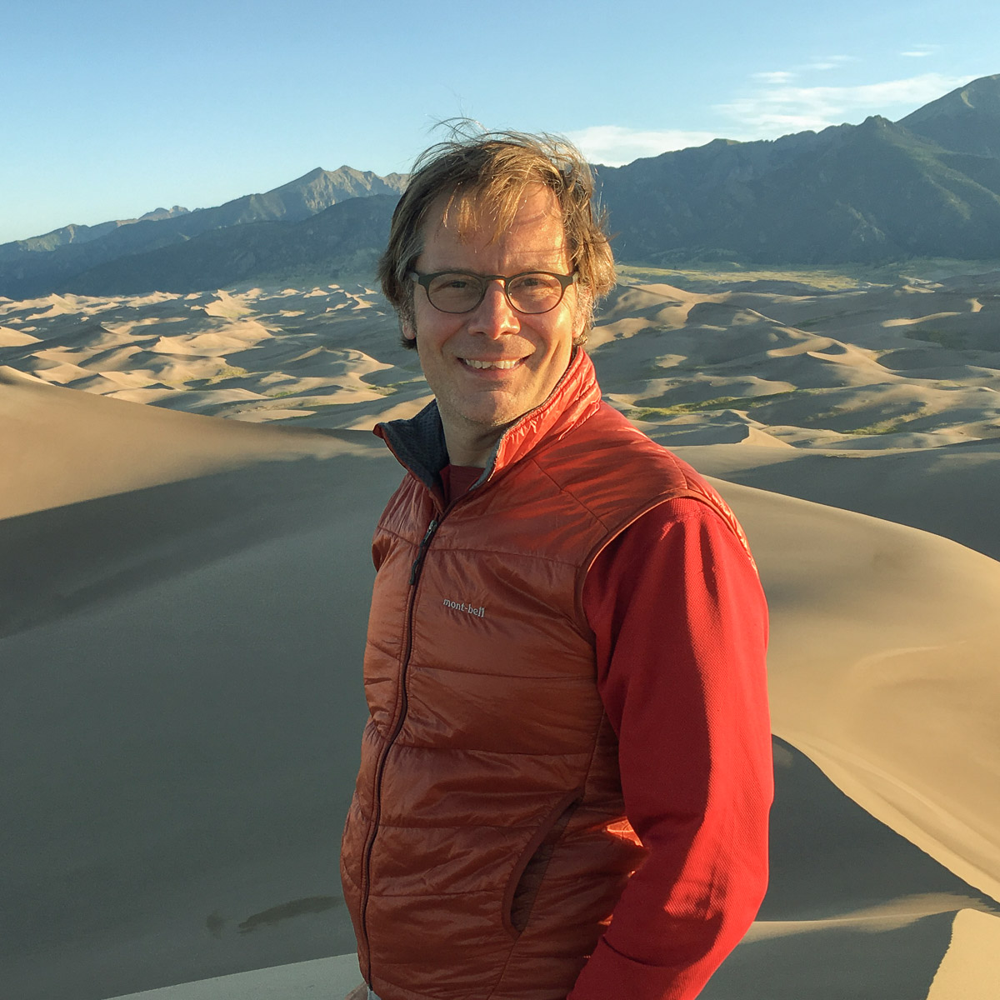
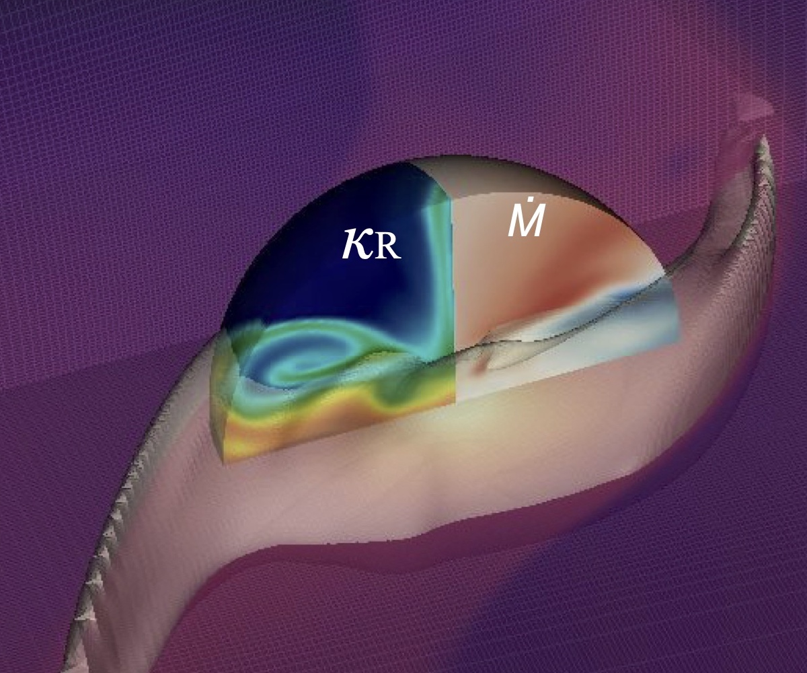

On the orbital evolution of binaries with polar circumbinary disks, C. Chen, P.J. Armitage, & C.J. Nixon, ApJL, in press
Pulsational instability of quasi-stars: Interpreting the variability of Little Red Dots, M. Cantiello, J.B. Hassan, R. Perna, P.J. Armitage, M.C. Begelman, Y.-F. Jiang, T. Ryu, & R.H.D. Townsend, ApJL (2026)
The astrometric resoeccentric degeneracy: Eccentric single planets mimic 2:1 resonant planet pairs in astrometry, D.A. Yahalomi, T. Lu, P.J. Armitage, M. Bedell, A.R. Casey, A.M. Price-Whelan, & M. Rice, ApJL (2026)
The growth of the central black holes in quasi-stars, J. Hassan, R. Perna, M. Cantiello, P.J. Armitage, M.C. Begelman, & T. Ryu, ApJ (2026)
Magnetic pressure dominance stabilizes AGN disks against gravitational instability, H.J. Gerling-Dunsmore, M.C. Begelman, J.B. Simon, & P.J. Armitage, ApJ (2026)
Demographics of young stars and their protoplanetary disks (C.F. Manara et al., review for Protostars and Planets VII)
Lecture notes on accretion disk physics (arXiv only)
Visualizing the kinematics of planet formation, Disk Dynamics Collaboration
Physical processes in protoplanetary disks (Armitage, 45th Saas-Fee Advanced Course "From Protoplanetary Disks to Planet Formation")
Dynamics of protoplanetary disks (Armitage, ARA&A, 2011)
Lecture notes on the formation and early evolution of planetary systems (arXiv only)
Beyond work I enjoy hiking, often combined with photography. My main focus is landscapes, but over the years I've also made trips to photograph bears in some spectacular spots in Alaska.